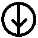
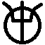
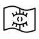
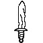

Simboli
Misteriozni simboli se pojavljuju vezano za
bogove i
polubogove. Ukupno ih ima 20.
Poznati simboli
Koplje
Simbol nađen na papiru kod mrtvih
kultista u
drugom session-u.

Vile
Simbol koji je nađen na vratima u špilji na granici
Seola i
Henou u
drugom session-u, te na tronu u špilji ispod
sela Viesa u
desetom session-u.

Oko u knjizi
Simbol na maču koji nosi
Aliasova skupina, te jedan od simbola na istom tronu kao i vile. U cijeloj špilji gdje se taj tron nalazi, ovaj simbol je na zamkama predstavljao siguran put.

Mač
Treći simbol koji se nalazi na tronu u špilji ispod sela Viesa. Taj simbol bi na zamkama uvijek značio opasnost.
